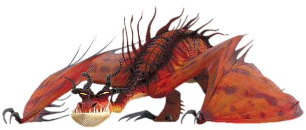

Le dragon qui s'embrase lui-même
| Catégorie | Poignardeurs |
| Type de feu | Huile enflammée (s'embrase lui-même) |
| Taille | 16 mètres |
| Envergure | 22 mètres |
| Poids | 2 400 kg |
| Couleur | Rouge et violet |
| Apprivoisable | Difficile |
L'un des dragons les plus imposants et les plus agressifs de Beurk. Le Cauchemar Monstrueux est capable de s'enduire d'un gel inflammable puis de s'embraser entièrement, devenant une boule de feu vivante. Très territorial et difficile à apprivoiser, il n'accepte de se laisser dresser que par quelqu'un qui fait preuve d'une grande force de caractère.
Crochefer - Dragon de Kognedur Jorgenson.
Punk - Dragon de Gustav Larson.